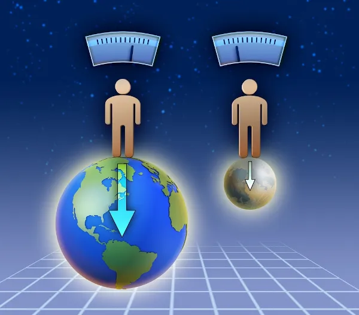
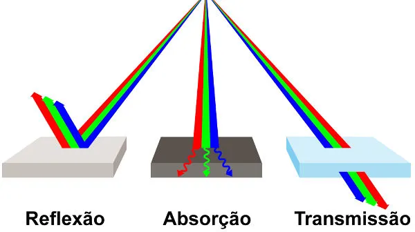
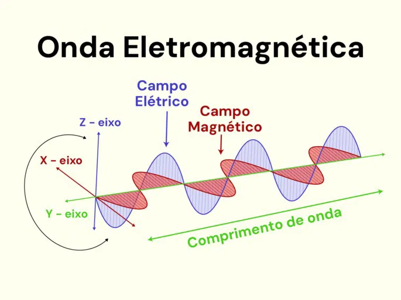

O que é a Física?
A Física é uma ciência natural que estuda os fenômenos e as estruturas fundamentais da natureza, com o objetivo de compreender e descrevê-los por meio de leis gerais.
Conheça mais sobre a física ->
No 2º ano do ensino médio, a física cobre temas como eletricidade, ondas e óptica, ajudando os alunos a entender fenômenos do cotidiano e a resolver problemas usando conceitos e fórmulas.
Galileu Galilei
Primeiro físico moderno.
Grécia Antiga
Onde Surgiu.
Isaac Newton
Pai da física clássica.
Entendendo o mundo a nossa volta
Imagine como seria se não entendêssemos a gravidade ou como a luz funciona. A Física nos ajuda a responder perguntas como: Por que o céu é azul? O que mantém os planetas em órbita? Como a eletricidade acende nossas lâmpadas? Essas perguntas e muitas outras são respondidas pela Física, que nos ajuda a ver o mundo com outros olhos.
.png)
Por que a física é importante?
A Física é a ciência que estuda o mundo natural, explorando desde os átomos invisíveis até as maiores galáxias no universo. Ela ajuda a explicar os fenômenos que acontecem ao nosso redor e responde perguntas sobre como o mundo funciona. Mas por que isso é importante? Conhecer a Física nos ajuda a entender a tecnologia que usamos, a natureza, e até mesmo nosso próprio corpo!
Pensamento Crítico e Raciocinio Lógico
Estudar Física não é só decorar fórmulas; ela exige pensamento lógico, paciência e habilidade para resolver problemas. Essas habilidades são úteis em qualquer área da vida e te ajudam a: Analisar problemas complexos, Encontrar soluções criativas, Pensar de forma mais crítica e objetiva.

Tecnologia e Inovação: A Física Está em Tudo
Desde os nossos celulares até os carros e computadores, a Física está por trás de todas as tecnologias que usamos no dia a dia. Entender a Física é essencial para inventar, melhorar e até resolver problemas que a tecnologia enfrenta. Quem sabe você não descobre uma nova invenção no futuro?
.webp)
Física nas profissões: Onde Posso usar esse conhecimento
Estudar Física abre portas para muitas profissões, como: Engenharia Medicina e Saúde Tecnologia e Programação Astronomia Ciências Ambientais Quem sabe você descobre uma paixão e se torna um físico, engenheiro ou até um astronauta?
.webp)
Física e o Ambiente: Como Essa Ciência Ajuda o Planeta?
A Física não serve apenas para estudar o espaço ou desenvolver novas tecnologias; ela também tem um papel crucial na compreensão e preservação do meio ambiente. Com a Física, cientistas conseguem: Analisar o comportamento do clima e prever mudanças climáticas, Entender fenômenos naturais, como terremotos, tsunamis e furacões, para minimizar desastres, Criar tecnologias sustentáveis, como painéis solares e turbinas eólicas. Estudar Física é também um caminho para ajudar a proteger o planeta e encontrar soluções para problemas ambientais.

Curiosidades da Física
A Física é cheia de fatos fascinantes que despertam a curiosidade! Aqui vão alguns para deixar os jovens intrigados: A luz demora cerca de 8 minutos para viajar do Sol até a Terra. Um único relâmpago pode iluminar uma cidade inteira por alguns segundos. O tempo passa mais devagar para quem viaja em alta velocidade, o que significa que, tecnicamente, um astronauta envelhece um pouco mais devagar no espaço! Essas curiosidades mostram que a Física é cheia de mistérios e descobertas, tornando o aprendizado ainda mais emocionante.
Glossário
Física Mecânica
Ela estuda o movimento e o repouso dos corpos a partir da aplicação ou não de forças sobre eles. Através do seu estudo, é possível calcularmos a velocidade dos corpos, o alcance máximo em um lançamento, a aceleração da gravidade e muitas outras coisas.
Termologia
Termologia é o estudo científico dos fenômenos relacionados ao calor e à temperatura, como transferência de calor, equilíbrio térmico, transformações sofridas por gases, mudanças de estado físico, etc.
Física Óptica
A Óptica é uma área da Física Clássica que investiga a propagação da luz, os tipos de meio em que ela pode se propagar, os tipos de fontes que emitem luz, fenômenos ópticos – como reflexão, refração, absorção, dispersão, interferência e difração.
Eletromagnetismo
Ela estuda o movimento e o repouso dos corpos a partir da aplicação ou não de forças sobre eles. Através do seu estudo, é possível calcularmos a velocidade dos corpos, o alcance máximo em um lançamento, a aceleração da gravidade e muitas outras coisas.
Biblioteca de Recursos
Encontre materiais de estudo, atividades e ferramentas de ensino organizados para facilitar o aprendizado e o planejamento de aulas, com conteúdos personalizados para cada necessidade educacional.

Para Alunos

Para Professores
Torne Seus Estudos mais Ativos e Envolventes
Khan Academy
O Khan Academy é uma plataforma online gratuita com cursos e recursos interativos para aprender física, matemática e mais, de forma autônoma.
Minuto da Física
O canal Minuto da Física no YouTube oferece vídeos curtos e claros sobre conceitos de física. Ideal para quem quer aprender ou revisar temas de maneira rápida e divertida.

Fundamentos de Física
Fundamentos de Física, de David Halliday, apresenta conceitos essenciais de física com explicações claras e exemplos práticos. É um recurso importante para quem busca aprofundar seus conhecimentos na disciplina.
Com esses recursos, você, aluno, tem acesso fácil a materiais didáticos, atividades e ferramentas que facilitam o seu aprendizado.

Para Alunos
Para Professores
Torne suas Aulas mais dinamicas e interessantes

Portal Física
O Portal de Física oferece resumos e exercícios sobre diversos temas, do básico ao avançado, sendo ideal para consultas rápidas e apoio ao planejamento de aulas.
Física Universitária
Canal com vídeos detalhados para entender conceitos e sugestões didáticas para sala de aula.

Prova|Fácil
Oferece simulados e questões de física, ajudando no desenvolvimento de provas e atividades.
Com esses recursos, você, professor, tem acesso fácil a materiais didáticos, atividades e ferramentas que facilitam o planejamento e tornam o ensino mais eficiente.

Feedback

Deixe sua opinião e nos ajude a melhorar ainda mais sua experiência!